Actions on Google is a developer platform that lets you create software to extend the functionality of the Google Assistant, Google's virtual personal assistant, across more than 500 million devices, including smart speakers, phones, cars, TVs, headphones, and more.
Users engage Google Assistant in conversation to get things done, like buying groceries or booking a ride. (For a complete list of what's possible now, see the Actions directory.) As a developer, you can use Actions on Google to easily create and manage delightful and effective conversational experiences between users and your own 3rd-party fulfillment service.
In this codelab, you build a basic action with Actions on Google. Also, you add more rich experience with Daily Updates and Push Notifications features.
We don't describe a detail for developing basic actions with Actions on Google and Dialogflow in this codelab. If you want to know how to build a general action, see Build Actions for the Google Assistant (Level 1) and Build Actions for the Google Assistant (Level 2).
What you'll build
In this codelab, you'll build a simple conversational Action with these features:
- Users can start a conversation by explicitly calling your Action by name.
- Once in conversation, the user asks your Action about news recently or of specified date. Your Action reads news which are matched by the specified condition.
- When the user asks your Action "Send me news everyday", your Action calls Daily Updates feature. Then, Google Assistant asks when the user wants to receive recent news. If the user replies to Google Assistant about an expected time, the notification registration is completed and the conversation is closed.
- When the user asks your Action "Send me latest news soon", your Action calls Push Notifications feature. Google Assistant asks the user to allow sending notifications. If the user allows it, the notification registration is completed and the conversation is closed.
- Write a code to send Push Notification to users, and actually send notifications.
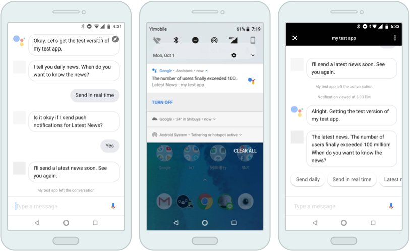
What you'll learn
- How to use Daily Updates feature to send notifications daily.
- How to use Push Notifications feature to send notifications in real time.
What you'll need
The following tools must be in your environment:
- Chrome Web browser.
- Android device, or iPhone device that has Google Assistant app.
- NodeJS that the latest version of 6, 8 or 10.
- Terminal to execute shell scripts with installed NodeJS and npm.
First, let's prepare a base action, before we describe Daily Updates and Push Notifications features. In this codelab, you build your action called "Daily News". This Daily News action provides the following features:
- When a user invokes your action, the action asks the user a date of news when the user wants to know.
- If the user says "Recent News", the action tells the user news published within 24 hours.
- If the user says "Today's news" or "News on September 22", which the phrases have certain date, the action tells the user news published on the specified date.
- If the user says "Latest news", the action tells one news published at most recently.
- The user can close the conversation anytime by when the user says phrases like "Goodbye".
For example, we image the conversation like the following. Of course, this dialog is not enough as a news service, but this is enough for the sample of this codelab.
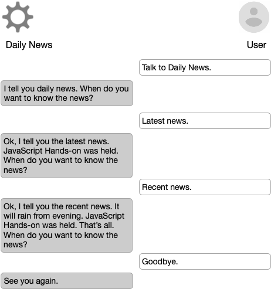
This conversation consists of phrases by turns between the user and the action. In this codelab, we will support notifications for the following askings later:
- When the user says "Recent news", your action registers sending notifications at specific time everyday with Daily Updates.
- When the user says "Latest news", your action sends a notification in real time with Push Notifications.
You create Actions by creating an Actions project and defining two things for each action: the intent and the fulfillment.
This section of the codelab describes how you setup your Actions project in the Actions Console.
Check your Google permission settings
In order to test the Action that you'll build for this codelab, you need to enable the necessary permissions.
- Go to the ‘Activity Controls' page (https://myaccount.google.com/activitycontrols).
- Sign in with your Google account, if you have not already done so.
- Ensure that the following permissions are enabled:
- Web & App Activity
- Device Information
- Voice & Audio Activity
Create an Actions project
Actions projects are containers for your Action(s) with the metadata (name, description, category) that becomes your Actions directory listing.
To start building Actions, you'll first need to create an Actions project as follows:
- Open the Actions Console.
- Click on Add/import project.
- Type in a Project name, like "daily-news-codelab". This name is for your own internal reference; later on, you can set an external name for your project.
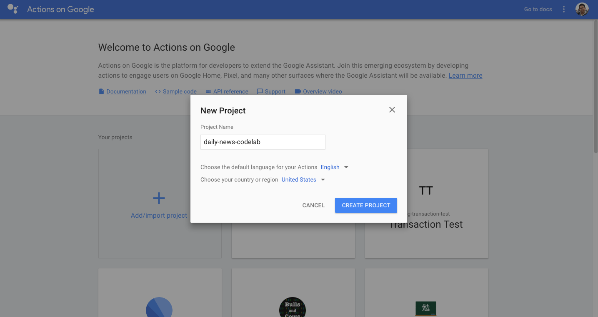
- Click Create Project.
- Rather than pick a category, click Skip on the upper-right corner.
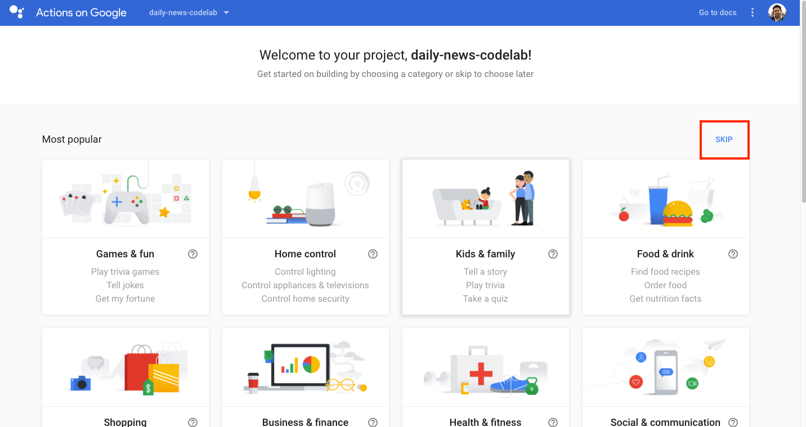
- Click Build > Actions in the left nav.
- Click Add your first Action.
- On the Create Action dialog, select Custom Intent and click Build. This will open the Dialogflow Console in another tab.

Create a Dialogflow agent
Now that you've built your Actions project, create a Dialogflow agent and associate it with your project:
- After following the steps above, you should already be in the Dialogflow Console with your Actions project name at the top. You may need to authorize Dialogflow to use your Google account, and accept the Terms of Service.
- Check the selected DEFAULT TIME ZONE and modify it if necessary. Click Create.
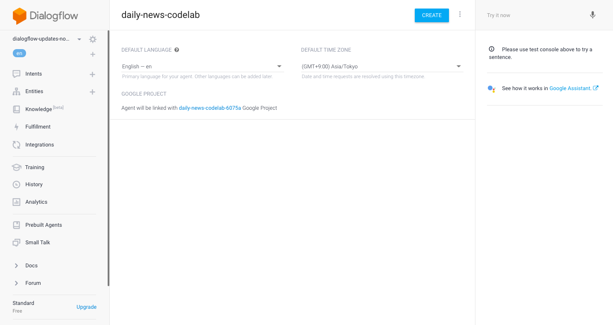
If the agent creation is successful, you will be in the Intents page. You can now begin customizing how your Dialogflow agent responds to user requests.
Now, let's define a conversation with the Dialogflow agent you created in the previous section. In this codelab, the Daily News action consists of the following defined intents:
- "Default Welcome Intent" - The welcome intent invoked at starting a conversation.
- "Quit" - The intent to close the conversation.
- "Recent News" - The intent to ask the recent (within 24 hours) news.
- "Past News" - The intent to ask the news of specific date.
- "Latest News" - The intent to ask the latest news.
Modify the Welcome intent
All Actions projects need a welcome intent as the entry point to start a conversation by users. The welcome intent is triggered when the user explicitly invokes the action by saying the action name.
As default, Dialogflow creates the welcome intent for us. In this codelab, we modify the welcome intent which is triggered when the user says "Talk to my test app".
Modify the welcome intent according to the following steps:
- On the Intents page of Dialogflow Console, click Default Welcome Intent.
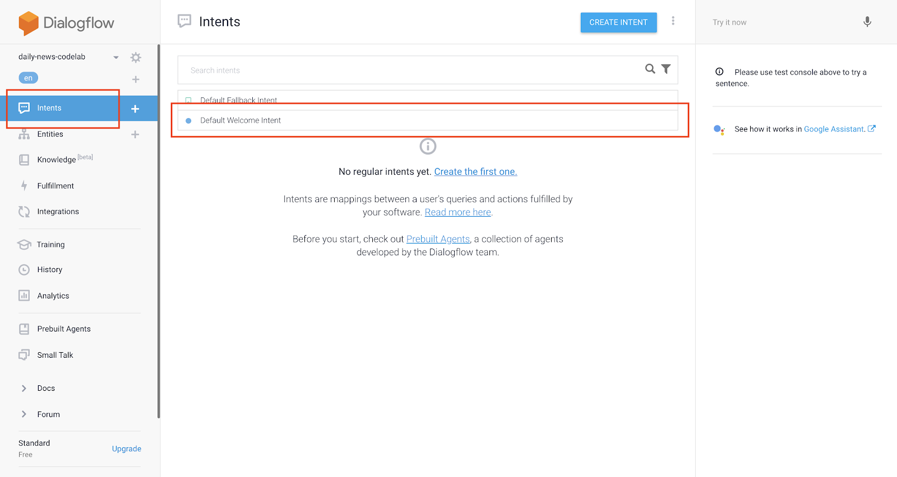
- Click Fulfillment on the bottom of the page, then the UI to configure your fulfillment is opened. And, turn on Enable webhook call for this intent.
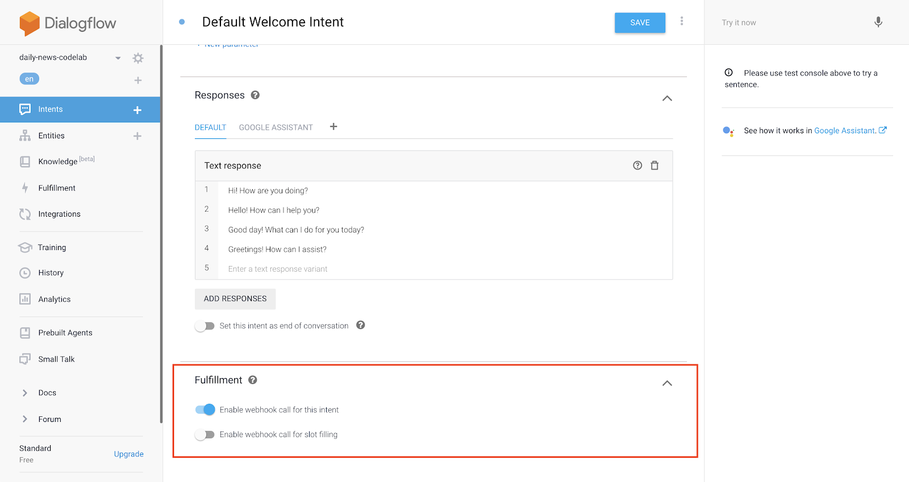
- Click SAVE button on the top of the page to save the modifications.
Create Quit intent
Next, you need to create Quit intent so that users want to close a conversation. Do the following steps on the Dialogflow console:
- Click + icon. This icon is on the right of the Intents menu item on the left navigation menu.
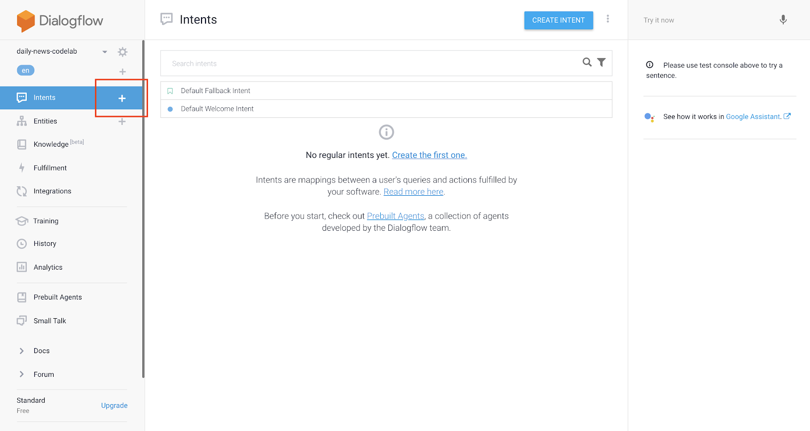
- Fill in "Quit" to the Intent name.
- Fill in "Goodbye" to the Training phrases, and press ENTER key.
- Fill in "See you again" to the Text Response on the Responses, then press ENTER key. And, turn on Set this intent as end of conversation.
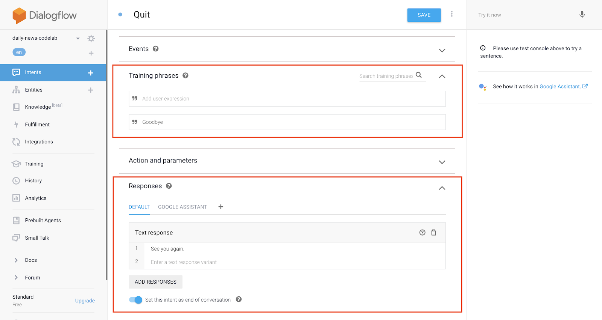
- Click SAVE button on the top of the page to save the modifications.
Create Recent News intent
Let's get started to create intents to specify a condition users expect. First, we create Recent News intent to ask recent (within 24 hours) news. Do the following steps on the Dialogflow:
- Click + icon. This icon is on the right of the Intents menu item on the left navigation menu.
- Fill in "Recent News" to the Intent name.
- Fill in the following phrases on the Training phrases:
- "Recent"
- "Recent news"
- "Want to hear the recent news"
- "Want to know the recent news"
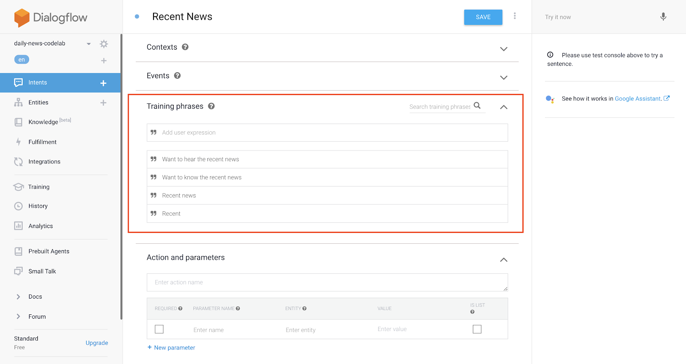
- Click Fulfillment on the bottom of the page, then the UI to configure your fulfillment is opened. And, turn on Enable webhook call for this intent.
- Click SAVE button on the top of the page to save the modifications.
Create Past News intent
Next, create Past News intent to ask news of the specific date by the user. Do the following steps on the Dialogflow:
- Click + icon. This icon is on the right of the Intents menu item on the left navigation menu.
- Fill in "Past News" to the Intent name.
- Fill in "Today's news" to the Training phrases, and press ENTER key.
By doing them, Dialogflow recognizes automatically that the "Today" word means a date. Also, the date parameter that the type is @sys.date (this is a system entity and represents a date) is assigned.
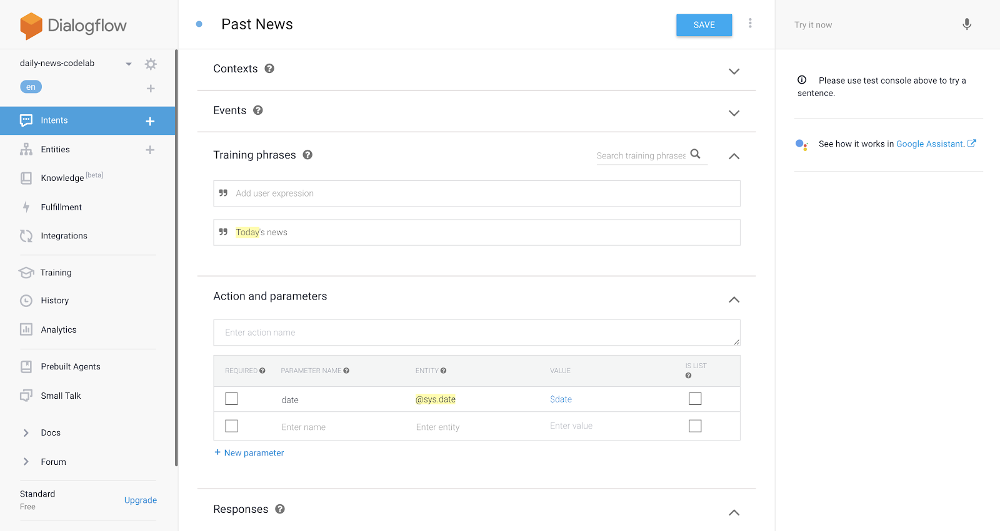
- Add the following phrases to the Training phrases in addition of the "Today's news".
- "Today"
- "Tell me today's news"
- "Want to know today's news"
- Click Fulfillment on the bottom of the page, then the UI to configure your fulfillment is opened. And, turn on Enable webhook call for this intent.
- Click SAVE button on the top of the page to save the modifications.
Create Latest News intent
Last, create Latest News intent to ask a latest news. Do the following steps on Dialogflow:
- Click + icon. This icon is on the right of the Intents menu item on the left navigation menu.
- Fill in "Latest News" to the Intent name.
- Fill in the following phrases on the Training phrases:
- "Latest news"
- "Latest"
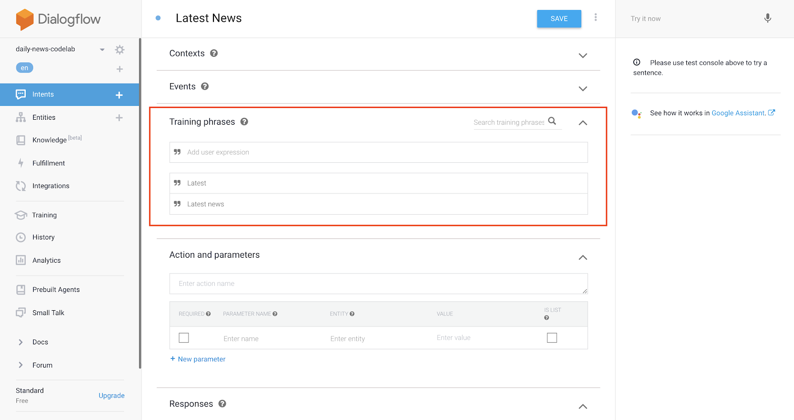
- Click Fulfillment on the bottom of the page, then the UI to configure your fulfillment is opened. And, turn on Enable webhook call for this intent.
- Click SAVE button on the top of the page to save the modifications.
That's all of creating basic intents for Daily News action. But, you cannot talk with the Daily News action yet.
In the previous section, we created some intents. Most intents call your fulfillment, because you turned on the flag for most intents. Here, we create a fulfillment code.
Build your fulfillment
A fulfillment is a program code invoked by webhook. We'll use the Dialogflow Console's Inline Editor to build and deploy the webhook. To build a webhook for your Action, do the following:
- In the left navigation, click on Fulfillment.
- Toggle Inline Editor to enabled.
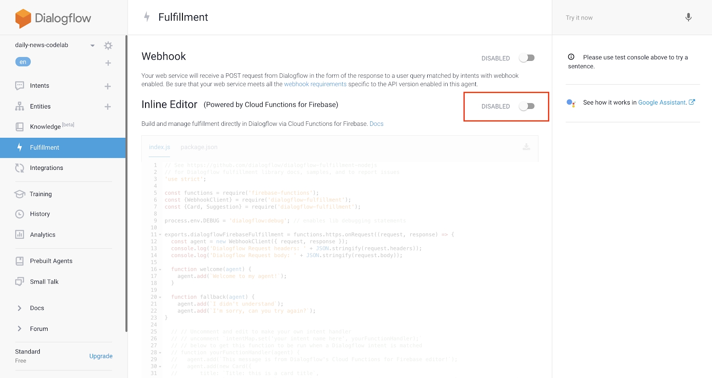
- Confirm that the index.js file is selected. Then, replace the code in the inline editor with the following:
index.js
"use strict";
const functions = require("firebase-functions");
const {
dialogflow,
Suggestions,
RegisterUpdate,
UpdatePermission
} = require("actions-on-google");
// Prepare SDK usage
const app = dialogflow({
debug: true
});
// "Default Welcome Intent" intent handler function
// The function to provide news of specific time span
// The function to reply
// "Recent News" intent handler
// "Past News" intent handler
// "Latest News" intent handler
// "Setup Daily Updates" intent handler
// "Finish Daily Updates Setup" intent handler
// "Setup Push Notifications" intent handler
// "Finish Push Notifications Setup" intent handler
// Register SDK as Firebase Functions
exports.dialogflowFirebaseFulfillment = functions.https.onRequest(app);- Click Deploy. It will take a few minutes for deploying your Webhook code by Dialogflow on this page. If the code is successfully deployed, you will see that the "Last deployed" timestamp was replaced next to the Deploy button.
Understand the code
The code for the webhook is implemented in JavaScript. When you use Dialogflow's inline editor, it deploys your webhook code on a managed environment in the cloud using Cloud Functions for Firebase.
The webhook code uses the Actions on Google Node.js client library to respond to HTTP requests that the Assistant sends to your webhook. The library allows you to create a DialogflowApp object, which acts as a wrapper for the Dialogflow API.
In this case, an app variable of the DialogflowApp object type is created.
Create "Default Welcome Intent" intent handler function
Add the following code into the index.js file. The place you should add the code is below the comment:
"Default Welcome Intent" intent handler function
// "Default Welcome Intent" intent handler function
app.intent("Default Welcome Intent", conv => {
conv.ask("I tell you daily news. When do you want to know the news?");
conv.ask(new Suggestions(["Latest news", "Recent news", "Yesterday's news"]));
});The app.intent() function is used to declare a callback to handle an intent. This app.intent() function receives two important arguments.
- Intent name: Specify a target intent name to register a callback.
- Callback function: Specify a callback function which is executed for the triggered intent.
The following value is passed for the first argument of the callback function.
- A
DialogflowConversationobject (the variable name:conv). This is a client library abstraction of the state of the dialog, and includes properties which represent values of the incoming request to our webhook, such as the current active Dialogflow contexts, the surface capabilities of the user device, etc.
The Default Welcome Intent handler function does the following:
- Pass a string to the
conv.ask()function. It means that the reply message to the user is passed to the Google Assistant. - Pass a
Suggestionsobject to the conv.ask() function. It means that the Suggestion Chip is also passed to the Google Assistant, not only the reply message.
By Suggestion Chip, if the user is using a device with screen, the user can ask Google Assistant by tapping only without inputting texts and speaking. For example, the Suggestion Chip will be shown under the reply message as like the following.
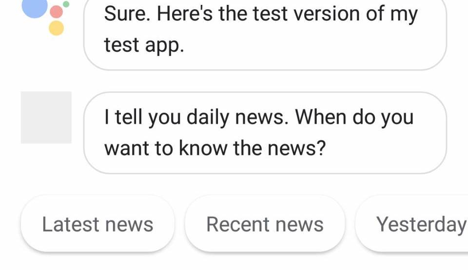
Create a function to provide news
Add the following code into the index.js file. The place you should add the code is below the comment:
The function to provide news of specific time span
// The function to provide news of specific time span
const getNews = (start, end) => {
return [
{
created: new Date("2018-09-24T09:00:00+0900"),
contents: "It will rain from evening."
},
{
created: new Date("2018-09-24T22:30:00+0900"),
contents: "A JavaScript study session will be held inside the company from 10 am on the 19th tomorrow. Please join us."
},
{
created: new Date("2018-09-25T10:00:00+0900"),
contents: "The number of users finally exceeded 100 million!"
}
].filter(x => {
// Limit news by the specific span
return (start <= x.created.getTime()) && (x.created.getTime() <= end);
}).sort((a, b) => {
// Sort news by the created
return a.created.getTime() - b.created.getTime();
}).map(x => {
// Return contents only
return x.contents;
});
};Essentially, we should get the news from some database or such storage dynamically, in this codelab, we create a getNews() function to get the fixed news list. In the code above, three news are defined. You can define news freely, but you need to include the following dates specified by the created property. They are useful at testing your action.
- Today (and within 24 hours from current time).
- Yesterday (and within 24 hours from current time).
- Yesterday (and before 24 hours from current time).
Here, we create one more convenience function. In some intent callback handler functions, they send a reply message with Suggestion Chip. It is not good to write same codes continuously. Therefore, we create a reply() function for common purpose. Add the following code into the index.js file. The place you should add the code is below the comment:
The function to reply
// The function to reply
const reply = (conv, message) => {
conv.ask(message);
conv.ask(new Suggestions([
"Send daily", "Send in real time",
"Latest news", "Recent news", "Yesterday's news"
]));
};Create "Recent News" intent handler function
Now, create each intent handler with the function to provide the news. The first intent handler is the Recent News intent handler function to tell the news list of within 24 hours. Add the following code into the index.js file. The place you should add the code is below the comment.
"Recent News" intent handler function
// "Recent News" intent handler
app.intent("Recent News", conv => {
// Get news within 24 hours
const news = getNews(Date.now() - 24 * 60 * 60 * 1000, Date.now());
// Reply
if (news.length === 0) {
reply(conv, "Nothing is the recent news. When do you want to know the news?");
} else {
reply(conv, `The recent news. ${news.join("")} That's all. When do you want to know the news?`);
}
});The code above returns different response depending on whether there is one or more news within 24 hours or not.
Create "Latest News" intent handler function
Next, create the Latest News intent handler function to tell one latest news. Add the following code into the index.js file. The place you should add the code is below the comment.
"Latest News" intent handler function
// "Latest News" intent handler
app.intent("Latest News", conv => {
// Get news within 24 hours
const news = getNews(Date.now() - 24 * 60 * 60 * 1000, Date.now());
if (news.length === 0) {
reply(conv, "Nothing is the latest news. When do you want to know the news?");
} else {
reply(conv, `The latest news. ${news[news.length - 1]} When do you want to know the news?`);
}
});The code above decides the latest news from the news retrieved from within 24 hours.
Create "Past News" intent handler function
The last intent you should create is the Past News intent handler function to tell the news of specific date the user specifies. Add the following code into the index.js file. The place you should add the code is below the comment.
Create "Past News" intent handler function
// "Past News" intent handler
app.intent("Past News", (conv, {date}) => {
// Get news of specific date
const start = new Date(date).setHours(0, 0, 0, 0);
const news = getNews(start, start + 24 * 60 * 60 * 1000 - 1);
// Reply
if (news.length === 0) {
reply(conv, "Nothing is the recent news. When do you want to know the news?");
} else {
reply(conv, `The news of specific date. ${news.join("")} That's all. When do you want to know the news?`);
}
});The Recent News and Latest News intent handlers receive one argument: conv. However, the Past News intent handler also receive a parsing result by the Dialogflow. In this codelab, we specifies 2nd argument {date} to the Past News intent handler. When you registered the Past News intent on the Dialogflow Console, do you remember that the date parameter which the type is @sys.date entity was automatically recognized? Here, the Past News intent handler receives the recognized value, and uses as the condition to search news.

After writing the Past News intent handler function, click DEPLOY button to deploy the code to the Firebase.
Test your action
By the preceding steps, your Daily News action became to be able to provide basic features. Now, with the Actions Console Simulator, actually let's test your action.
To test your Action with Actions Simulator:
- On the left navigation of the Dialogflow console, click Integrations. Then, click Google Assistant > Integration Settings.
- Click Test to update your Actions project and load it into the Actions Console simulator. (If you see a ‘Check auto-preview setting' dialog, you can leave the ‘Auto-preview changes' option enabled, then click Continue.)
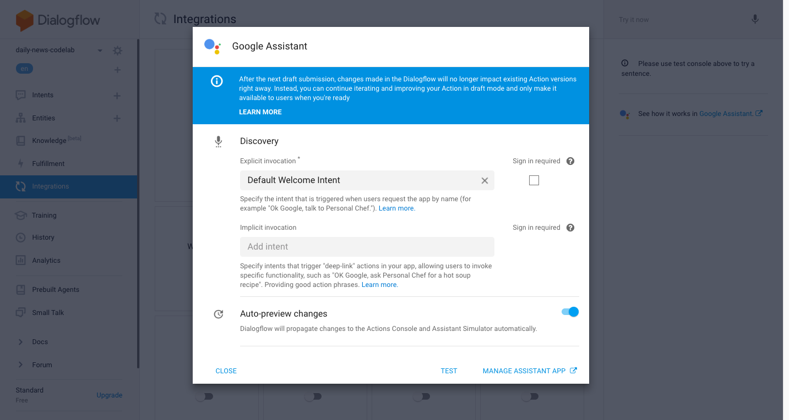
- To test your Action in the simulator, type "Talk to my test app" into the Input field and hit enter.
- Confirm whether you can get the correct responses, if you say the following phrases:
- "Today's news"
- "Recent news"
- "Latest news"
- "Goodbye"
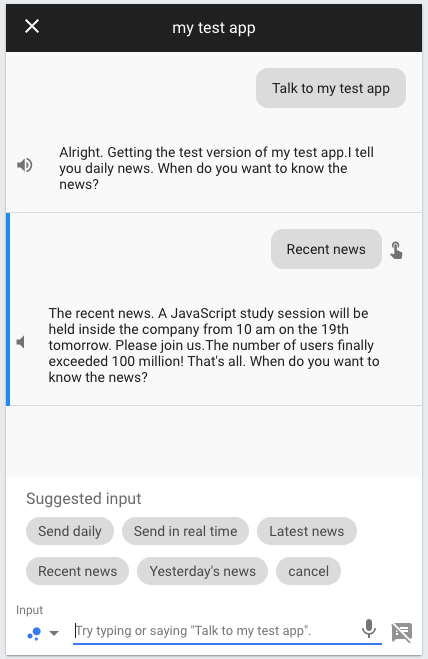
Now, the implementation for basic features of your Daily News action.
In this section, we add Daily Updates feature to your Daily News action. Your action can get the feature by the Daily Updates to send notifications about the recent news at each time when the user specifies daily.
Understand how Daily Updates works
Using the Daily Updates, users can receive notification at specific time daily. When the user taps the notification, Google Assistant invokes the action, then the certain intent in the action is triggered.
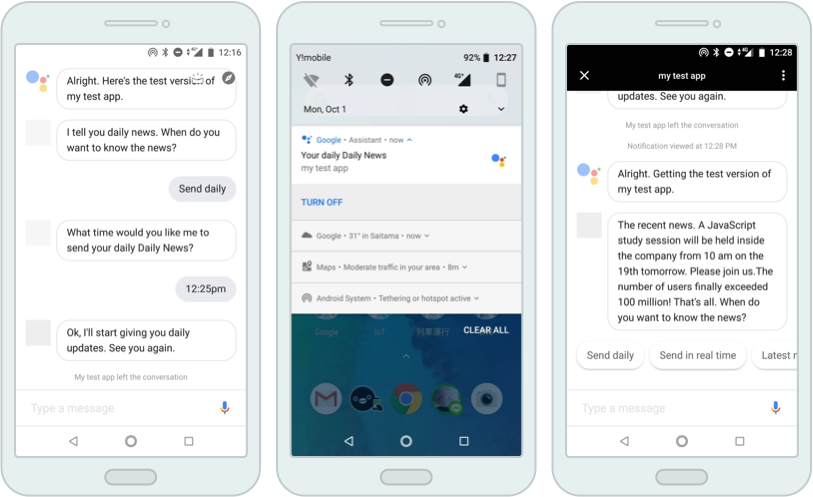
The process flow of Daily Updates is follows:
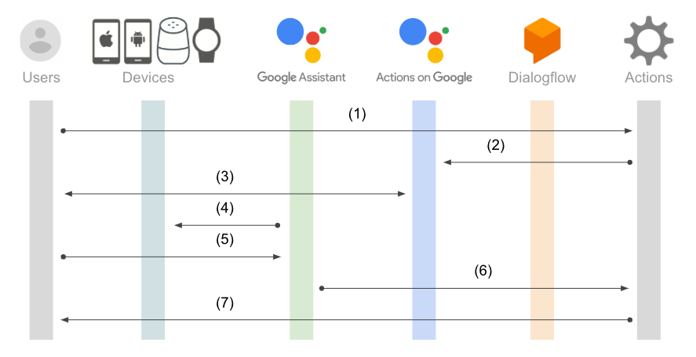
- The user says the phrase to request to register Daily Updates to your action via Google Assistant.
- The fulfillment of your action requests to register Daily Updates to the Actions on Google with
RegisterUpdateclass provided by the SDK. - Google Assistant asks the user the time when the user wants to receive notifications. When the user answers the time, the registration of Daily Updates is completed.
- When come around the time, Google Assistant sends a notification to the user's device.
- When the user notices the notification, the user taps the notification. Then, Google Assistant is invoked.
- The Google Assistant invokes your action based on the notification content. And, the intent specified by the step (2) is triggered.
- The action responds a reply message from the intent handler function.
In this codelab, we register the Recent News intent to tell the recent news as the Daily Updates.
Create an intent to register Daily Updates
First, we add an intent to tell users to want to receive recent news daily to Dialogflow. Do the following steps on the Dialogflow.
- Click + icon on the right of the Intents menu in the left navigation menu.
- Fill in "Setup Daily Updates" into the Intent name.
- Fill in the following phrases to the Training phrases.
- "Send daily"
- "Send me news daily"
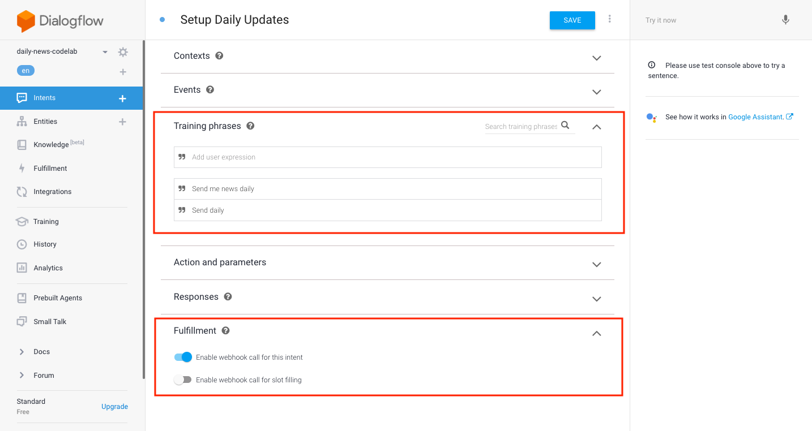
- Click Fulfillment on the bottom of the page, then the UI to configure your fulfillment is opened. And, turn on Enable webhook call for this intent.
- Click SAVE button on the top of the page to save the modifications.
Create "Setup Daily Updates" intent handler function
Next, we add Setup Daily Updates intent handler function to register Daily Updates. Add the following code into the index.js file. The place you should add the code is below the comment.
"Setup Daily Updates" intent handler function
// "Setup Daily Updates" intent handler
app.intent("Setup Daily Updates", conv => {
// Request to register Daily Updates
conv.ask(new RegisterUpdate({
intent: "Recent News",
frequency: "DAILY"
}));
});To register Daily Updates, we use the RegisterUpdate class provided by the SDK. At that time, specify the following information:
intent- Specify the intent name which is triggered at tapping the notification by the user.frequency- Specify the "DAILY" string that represents Daily Updates.
By the code above, instead of your action, Google Assistant asks the user the time to send notification.
Create an intent to get the result of Daily Updates registration
After specifying the time to the Google Assistant by the user, the Actions on Google sends your action actions_intent_REGISTER_UPDATE. You need to add an intent to receive this event to your Dialogflow agent. Do the following steps on the Dialogflow Console.
- Click + icon on the right of the Intents menu in the left navigation menu.
- Fill in "Finish Daily Updates Setup" into the Intent name.
- Fill in the "actions_intent_REGISTER_UPDATE" to the Events.
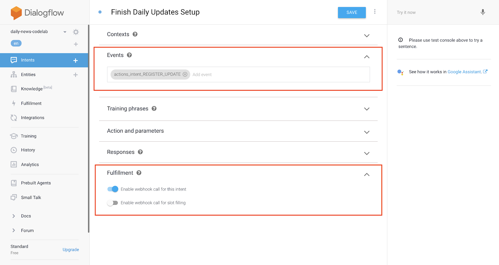
- Click Fulfillment on the bottom of the page, then the UI to configure your fulfillment is opened. And, turn on Enable webhook call for this intent.
- Click SAVE button on the top of the page to save the modifications.
Create "Finish Daily Updates Setup" intent handler function
Add a function to handle the actions_intent_REGISTER_UPDATE event in your fulfillment. Add the following code into the index.js file. The place you should add the code is below the comment.
"Finish Daily Updates Setup" intent handler function
// "Finish Daily Updates Setup" intent handler
app.intent("Finish Daily Updates Setup", (conv, params, registered) => {
if (registered && registered.status === "OK") {
conv.close("Ok, I'll start giving you daily updates. See you again.");
} else {
reply(conv, "Feel free to register daily updates. When do you want to know the news?");
}
});You can know the result of registering Daily Updates by checking the 3rd argument of the callback function which is passed as the 2nd argument of the app.intent() function. In the code above, its variable is called registered. If this value is not undefined and the status value is "OK", the registration of Daily Updates is succeeded.
If the Daily Updates is registered, in this codelab, reply and close the conversation at the same time.
Register Recent News intent as Daily Updates
To send notification to users with Daily Updates, the intent has to be registered as the target of Daily Updates on Actions on Google. To register it, do the following steps.
- On the left navigation of the Dialogflow console, click Integrations. Then, click Google Assistant > Integration Settings.
- Fill in "Recent News" to the Add intent field of Implicit invocation, then press ENTER key.
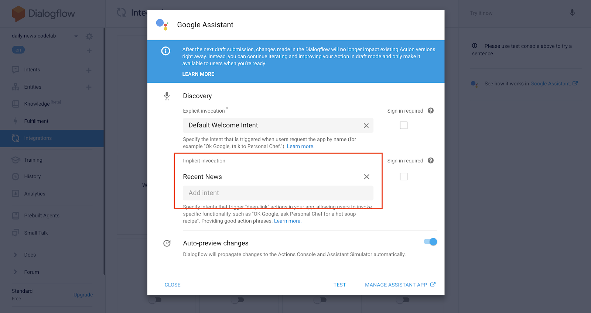
- Click TEST. Then, Actions on Google will be opened in the new tab.
- Click Actions from the navigation menu on the left of Actions on Google Console. Then, click the row of the Recent News in the list of the right in the page.
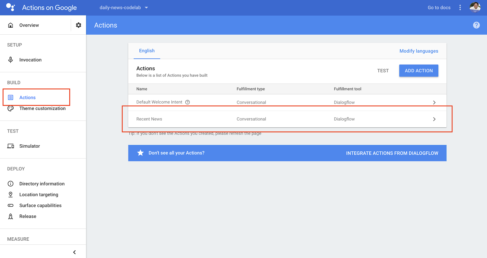
- Turn on the Would you like to offer daily updates to users? on the bottom of the page. And, fill in "Daily News" to the Content title field. This string will be used on notifications.
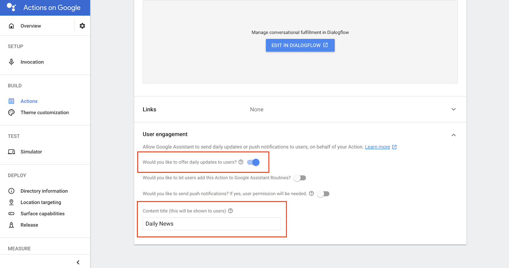
- Click SAVE button on the right top of the page.
Test the Daily Updates
Now, let's test the Daily Updates. You need to use your Smartphone device, instead of the Actions Simulator of Actions on Google. The step for testing is the following.
- On your smartphone device, launch Google Assistant. And, say "Talk to my test app" to invoke your action. You will receive the welcome message from your action.
- Say "Send daily".
- Google Assistant asks the time when you want to send notifications. As like the following, you need to answer the time. Notice, the time must be after 10 minutes based on the current time.
- "4:30pm"
- "16:45"
- Wait until the time comes.
- When receiving the notification on your smartphone device, tap it.
If you want to cancel the notification sending, tap the "TURN OFF" on the received notification. When tapping it, Google Assistant asks you to turn off the notification. If you answer "Yes", the notification sending will be canceled.
In this section, we add Push Notifications for your Daily News action. Users can receive notifications about a latest news in real time with the Push Notifications.
Understand how Push Notifications works
Using Push Notifications, your action can send users notifications anytime. But, your action can send it after the user allows to send it. When the user taps the notification, Google Assistant invokes your action, and the certain intent including your action is triggered.
The process flow of Push Notifications is follows.
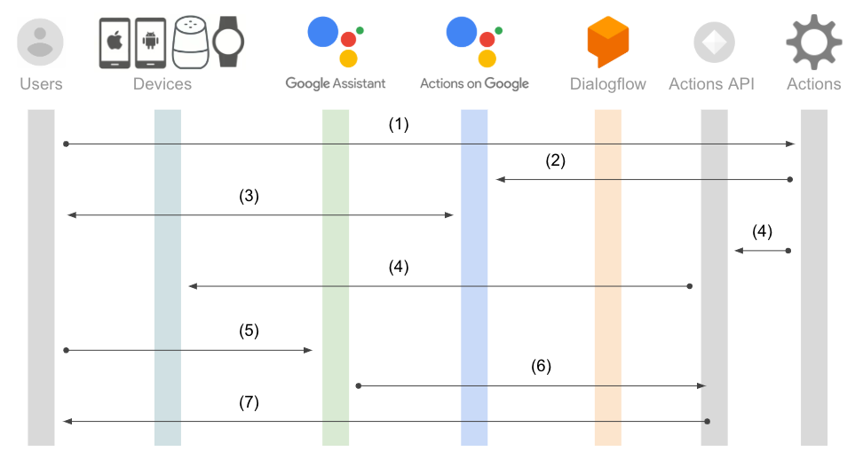
- The user says the phrase to request Push Notifications to your action via Google Assistant.
- The fulfillment of your action requests to allow Push Notifications to the Actions on Google with
UpdatePermissionclass provided by the SDK. - Google Assistant asks the user to allow to send notifications. The user answers about whether allows to send it or not.
- After allowing the user it, your action sends a notification with Actions API. The notification sent to the user's smartphone device.
- When the user notices the notification, the user taps the notification. Then, Google Assistant is invoked.
- The Google Assistant invokes your action based on the notification content. And, the intent specified by the step (2) is triggered.
- The action responds a reply message from the intent handler function.
In this codelab, we use Push Notifications for the Latest News intent to tell the latest news. In this section, first, we add a feature to get a permission to send notifications from users.
Create an intent to request Push Notifications
First, we add an intent to request to get the latest news in real time by users to the Dialogflow agent. Do the following step on the Dialogflow.
- Click + icon on the right of the Intents menu in the left navigation menu.
- Fill in "Setup Push Notifications" into the Intent name.
- Fill in the following phrases to Training phrases.
- "Send in real time"
- "Send quickly"
- "Send soon"
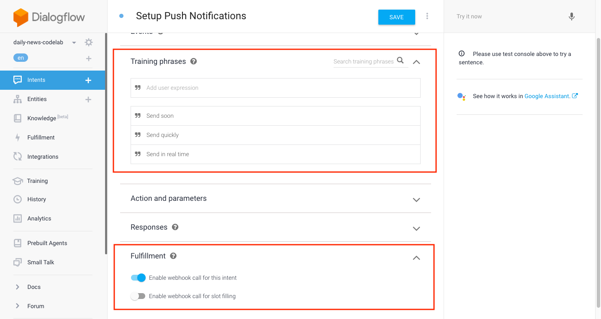
- Click Fulfillment on the bottom of the page, then the UI to configure your fulfillment is opened. And, turn on Enable webhook call for this intent.
- Click SAVE button on the top of the page to save the modifications.
Create "Setup Push Notifications" intent handler function
Next, add a new intent handler function for the Setup Push Notifications intent to request to use Push Notifications. Add the following code into the index.js file. The place you should add the code is below the comment.
"Setup Push Notifications" intent handler function
// "Setup Push Notifications" intent handler
app.intent("Setup Push Notifications", conv => {
conv.ask(new UpdatePermission({
intent: "Latest News"
}));
});To get a permission to send notifications with Push Notifications from users, we use UpdatePermission class provided by the SDK. At the time, we pass the following information.
intent- Specify the intent name which is triggered when the user taps the notification.
By the code above, Google Assistant asks the user whether allowing to send notifications or not, instead of your action.
Create an intent to get the result about allowing of Push Notifications
After the user answers to allow or deny to the Google Assistant, Actions on Google sends actions_intent_PERMISSION event to your action. You need to add an intent to handle the event to the Dialogflow agent. Do the following step on the Dialogflow Console.
- Click + icon on the right of the Intents menu in the left navigation menu.
- Fill in "Finish Push Notifications Setup" into the Intent name.
- Fill in "actions_intent_PERMISSION" into the Events.
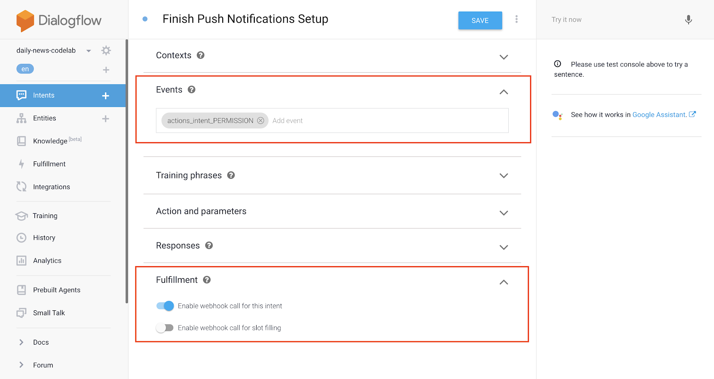
- Click Fulfillment on the bottom of the page, then the UI to configure your fulfillment is opened. And, turn on Enable webhook call for this intent.
- Click SAVE button on the top of the page to save the modifications.
Create "Finish Push Notifications Setup" intent handler function
Add a function to handle the actions_intent_PERMISSION event in your fulfillment. Add the following code into the index.js file. The place you should add the code is below the comment.
"Finish Push Notifications Setup" intent handler function
// "Finish Push Notifications Setup" intent handler
app.intent("Finish Push Notifications Setup", (conv, params, granted) => {
if (granted) {
const userId = conv.arguments.get("UPDATES_USER_ID");
console.log("userId", userId);
conv.close("I'll send a latest news soon. See you again.");
} else {
reply(conv, "Feel free to register Push Notifications. When do you want to know the news?");
}
});You can know the result of whether the user allows to send notifications with Push Notifications by checking the 3rd argument of the callback function which is passed as the 2nd argument of the app.intent() function. In the code above, its variable is called granted. If this value is not undefined, it means that the user allowed to send notifications..
In the code above, we get the ID of the user who granted the permission to send notifications by calling the conv.arguments.get("UPDATES_USER_ID"). Essentially, we need to store the ID string into a database or such storage, but, we output the string to the log in this codelab. This value will be used at sending notifications with Actions API later.
If the Push Notifications is allowed, in this codelab, reply and close the conversation at the same time.
Register Latest News intent as Push Notifications
To send user notifications with Push Notifications, you need to register the intent as the target intent for Push Notifications on Actions on Google Console. To register it, do the following step.
- On the left navigation of the Dialogflow console, click Integrations. Then, click Google Assistant > Integration Settings.
- Fill in "Latest News" to the Add intent field of Implicit invocation, then press ENTER key.
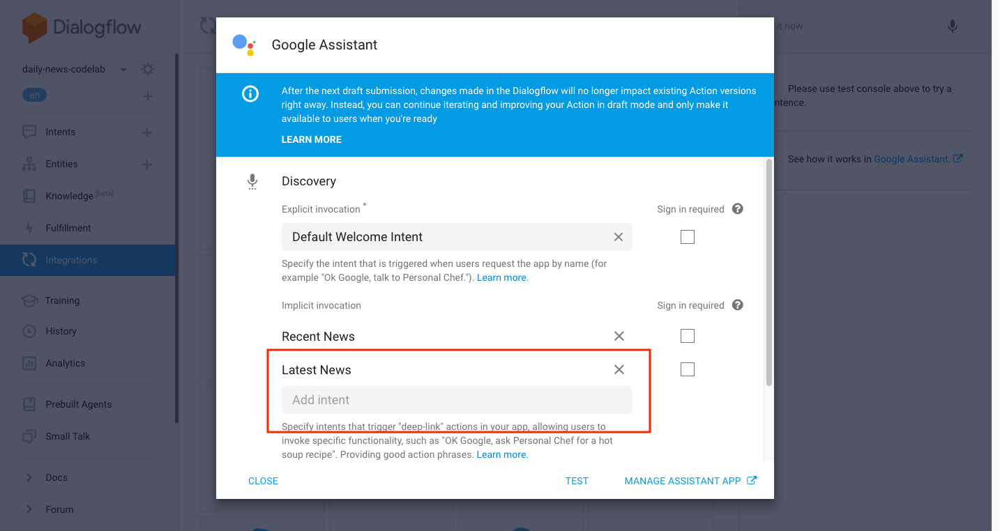
- Click TEST. Then, Actions on Google will be opened in the new tab.
- Click Actions from the navigation menu on the left of Actions on Google Console. Then, click the row of the Latest News in the list of the right in the page.
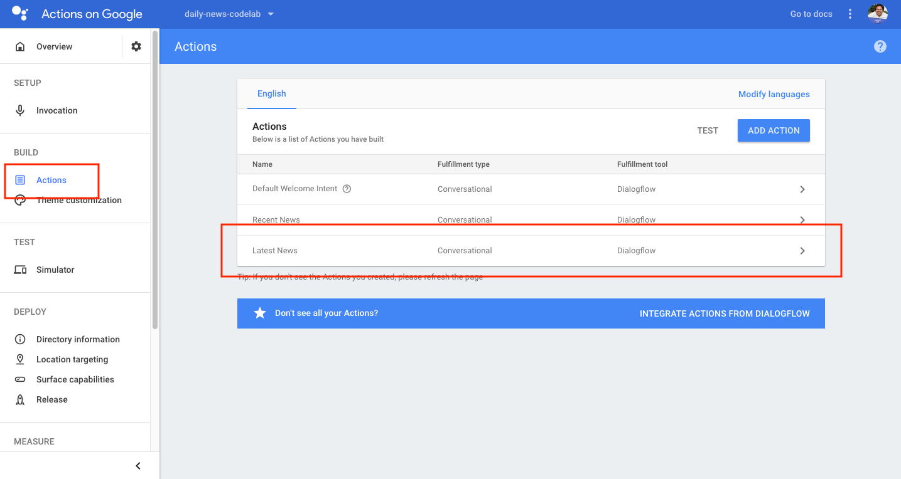
- Turn on the Would you like to send push notifications? If yes, user permission will be needed. on the bottom of the page. And, fill in "Latest News" to the Content title field. This string will be used on notifications.
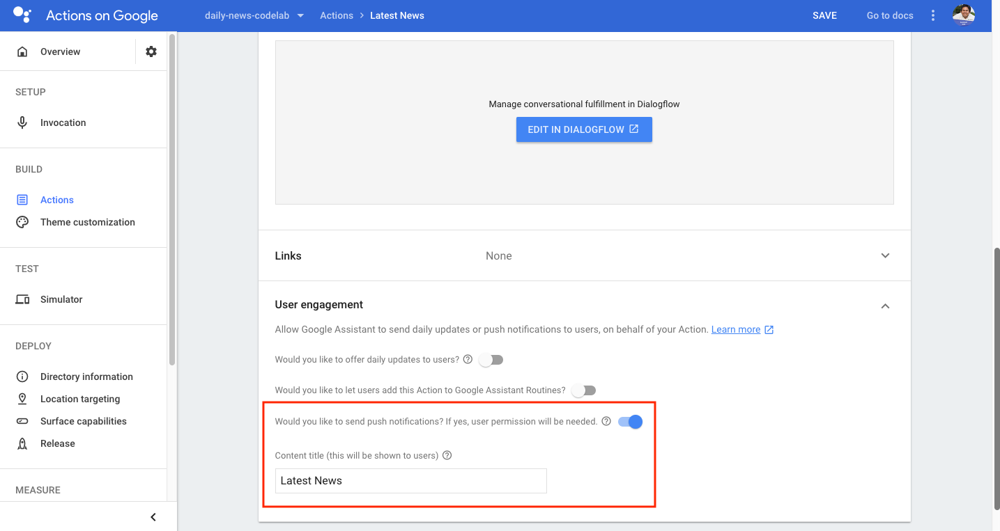
- Click SAVE button on the right top of the page.
Test to allow to send notification with Push Notifications
Let's test to allow to send notifications with Push Notifications. In this codelab, as same as Daily Updates, test your action on your smartphone device (actually, this test will work on the Actions Simulator). To test it, do the following.
- On your smartphone, launch Google Assistant. Then, say "Talk to my test app" to invoke your action. You will receive the welcome message from your action.
- Say "Send in real time".
- Google Assistant asks you to allow/deny to send notifications. Then, reply "Yes".
After answering, you need to find the ID of the user who allowed to send notifications from the logs. Do the following step.
- Click the View execution logs in the Firebase console link on the bottom of the Fulfillment page in Dialogflow. The logs page of Cloud Functions of Firebase will be opened in the new tab.
- Find the row like
userId .... The string is the ID of the user who granted the permission to send notifications. You need to write it down, and you will use it later.
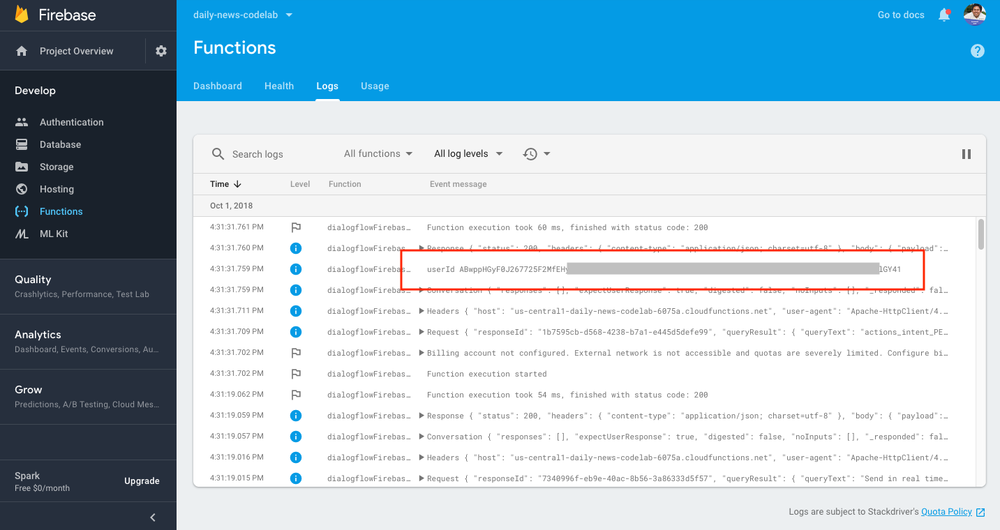
You can send notifications actually, if you get the ID string of the user who granted the permission to send notifications with Push Notifications feature.
In this section, we create a function to send actual notifications for the user who granted the permission to send notifications at the previous section. In this codelab, we create a JavaScript file to send notifications, instead of implementing it to the fulfillment code.
Enable Actions API
To send notifications with Push Notifications, we need to use Actions API. But, we cannot use the Actions API now, although you created your project on Actions on Google and Dialogflow. You need to become the Actions API available on Google Cloud Platform.
To enable Actions API, do the following operation.
- There is a gear icon next to the Dialogflow agent name on the left navigation menu in Dialogflow. Click the gear icon to open the setting page.
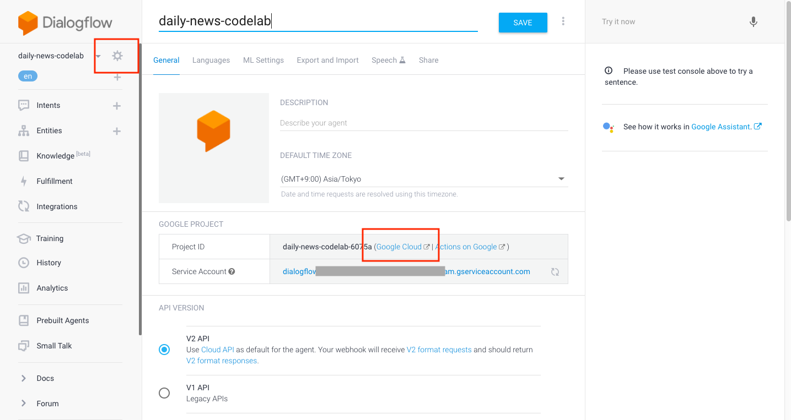
- Click Google Cloud link on the GOOGLE PROJECT. In the new tab, the Google Cloud Platform Console is opened. Confirm that the "daily-news-codelab" project is selected on the header.
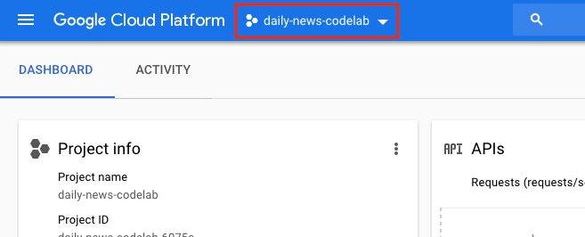
- Click the hamburger menu on the top left of the page, then click APIs & Services in the menus. And, click Dashboard.
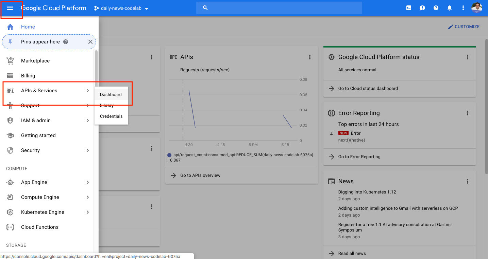
- Click ENABLE APIS AND SERVICES on the top of the page.
- Fill in "Actions API" to the Search for APIs & Services field. Then, the search result will be shown. In the result, click "Actions API".
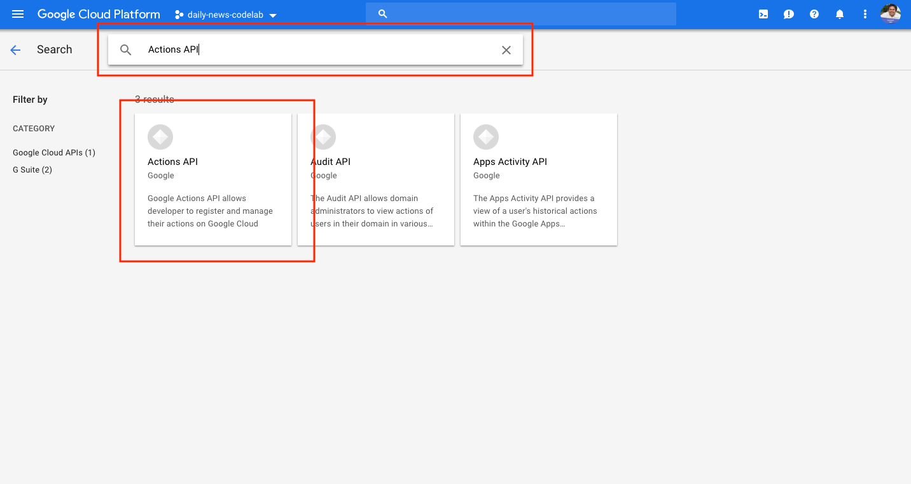
- Click ENABLE button on the description page for Actions API.
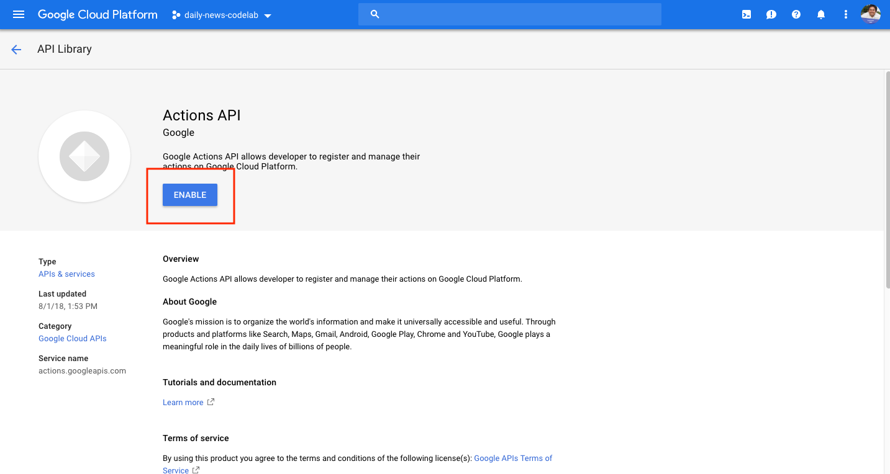
After the Actions API is enabled, the dashboard page for Actions API will be shown.
Issue Service Account Key
To use Actions API to send notifications, you need to issue Service Account Key from the Google Cloud Platform. Your client will be authenticated by the issued Service Account Key to use Actions API.
To issue Service Account Key, do the following step.
- Click the hamburger menu on the top left of the page, then click APIs & Services in the menus. And, click Credentials.
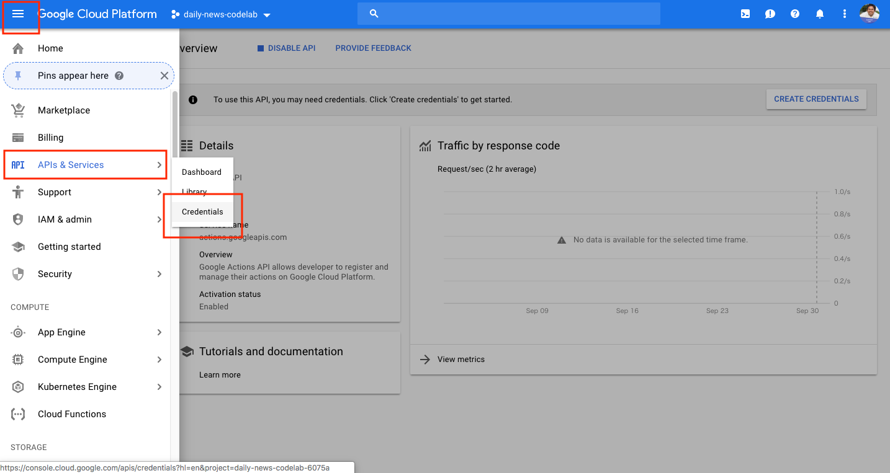
- Select Service account key from the Create Credentials pulldown menu.
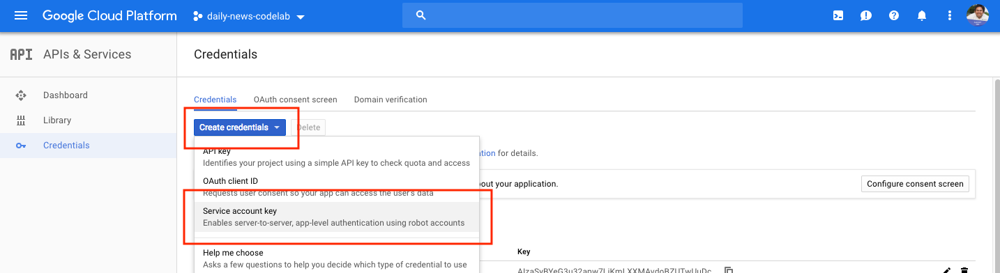
- As Service account, select "New service account", and fill in the following:
- Service account name: "notifications"
- Role: (Project) Owner
- Key type: JSON
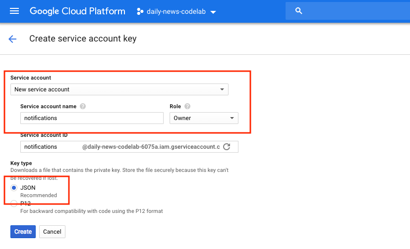
- Click Create. Select a directory to save the downloaded JSON file.
Create Node.js project
In this section, we start to create a JavaScript file to send notifications. First, do the following step to create a directory and to start Node.js project.
- In your terminal, create
daily-news-codelabdirectory in any place, and change the current directory into the created directory.
mkdir daily-news-codelab
cd daily-news-codelab- With the
npmcommand, create a Node.js project. You ask some questions, you can answer pressing ENTER key for all questions.
npm init- As the dependencies, install googleapis and request.
npm install googleapis --save
npm install request --saveCreate JavaScript file to send notifications
You could get your Node.js profile. Now, confirm whether you have the following:
- The ID string of the target user to send notifications
- The JSON file of your service account key
Create a new file named send-notification.js including the following contents into the daily-news-codelab directory you created at the previous section.
send-notification.js
"use strict";
const {google} = require("googleapis");
const key = require("<SERVICE_ACCOUNT_KEY_JSON_FILE_PATH>");
const request = require("request");
const jwtClient = new google.auth.JWT(
key.client_email,
null,
key.private_key,
[
"https://www.googleapis.com/auth/actions.fulfillment.conversation"
],
null
);
jwtClient.authorize((err, tokens) => {
const options = {
userNotification: {
title: process.argv[2]
},
target: {
userId: "<TARGET_USER_ID>",
intent: "Latest News",
locale: "en-US"
}
};
request.post("https://actions.googleapis.com/v2/conversations:send", {
auth: {
"bearer": tokens.access_token
},
json: true,
body: {
customPushMessage: options
}
}, (err, response, body) => {
console.log(response.statusCode + ":" + response.statusMessage);
});
});You need modify two codes in the send-notification.js file. Replace them with the followings:
<SERVICE_ACCOUNT_KEY_JSON_FILE_PATH>- The JSON file path of your service account key<TARGET_USER_ID>- The ID of the target user to send notifications
The first half of the code reads the JSON file of your service account key and retrieves an access token. Then, the last half of the code passes the following necessary information to the request() function at calling the Actions API endpoint. For instance, the following information are passed:
- body.customPushMessage.userNotification.title - The title of notifications.
- body.customPushMessage.target.userId - The target user ID string to send notifications.
- body.customPushMessage.target.intent - The intent name triggered at the user taps the notification.
- body.customPushMessage.target.locale - Country and Language code (IETF BCP-47).
You can specify the notification title string with the command argument at executing the send-notification.js file with process.argv[2].
Send notifications
Execute the following command in your terminal:
node send-notification.js "The number of users finally exceeded 100 million"If you see the following output, the notification was sent successfully.
200:OKNow, confirm whether your smartphone device receives a notification. Then, tap the notification.
If you want to cancel the notification sending, tap the "TURN OFF" on the received notification. When tapping it, Google Assistant asks you to turn off the notification. If you answer "Yes", the notification sending will be canceled.
Congratulations!
You've now covered the intermediate skills necessary to build conversational user interfaces with Actions on Google and how to increase user engagement to send notifications to users using Daily Updates and Push Notifications.
What we've covered
- How to use Daily Updates feature to send notifications daily.
- How to use Push Notifications feature to send notifications in real time.
What's next
Google provides more rich code samples so that you can learn how to use Daily Updates and Push Notifications.
You can explore these resources for learning about Actions on Google:
- actions.google.com: The official documentation site for Actions on Google.
- Actions on Google GitHub repo: Sample code and libraries.
- Dialogflow.com: The official documentation site for Dialogflow.
- Actions on Google Developers: The official Google+ community for developers working with Actions on Google.
Follow us on Twitter @ActionsOnGoogle to stay tuned to our latest announcements, and tweet to #AoGDevs to share what you have built!
Feedback survey
Before you go, please fill out this form to let us know how we're doing!